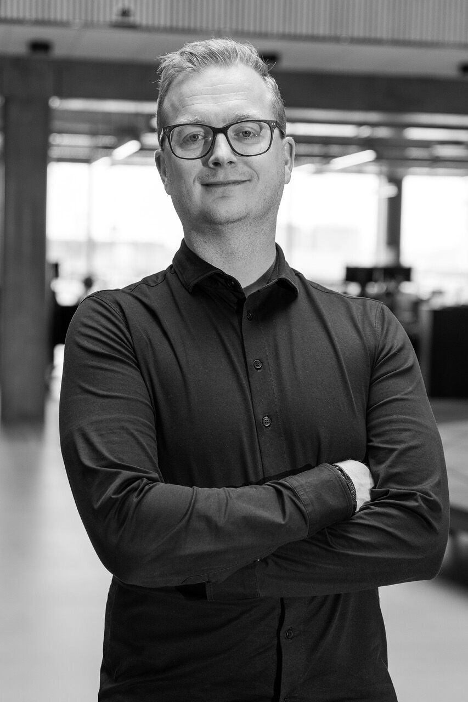
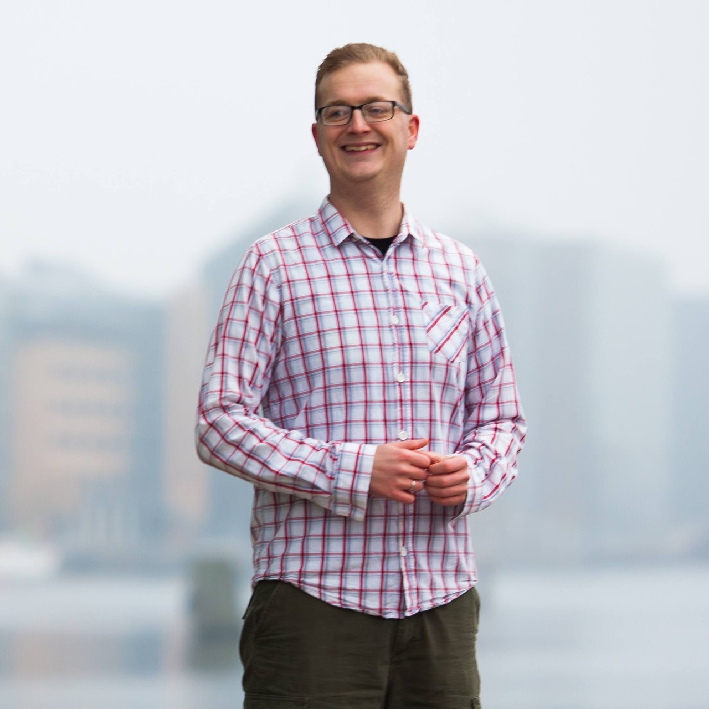

I ved, at noget skal ændres – men ikke helt hvad.
Problemet bliver ved med at vende tilbage, selvom I har prøvet at løse det.
PROBLEMLØSER · IDÉMAGER · RELATIONSSKABER
Jeg hjælper virksomheder og organisationer med at finde ud af, hvad der faktisk står i vejen, udvikle nye muligheder og få dem omsat til handling.

PROBLEMLØSER 01Det svære er ofte ikke at finde en løsning. Det er at finde ud af, hvad der faktisk skal løses.
Problemet bliver ved med at vende tilbage, selvom I har prøvet at løse det.
Der er potentiale, men også ubesvarede spørgsmål, modstand eller manglende retning.
Forskellige perspektiver skal samles, så I kan komme fra snak til en konkret vej videre.
Det er dér, jeg kommer ind.
Jeg starter ikke med en færdig standardløsning. Jeg starter med at forstå virkeligheden. Jeg undersøger, udfordrer, involverer og udvikler sammen med de mennesker, der skal få løsningen til at fungere.
Når problemet ikke er så enkelt, som det ser ud.
Jeg går bag om symptomerne, samler data og perspektiver og undersøger, hvor problemet reelt ligger – så I bruger kræfterne på at løse det rigtige problem.
Når I har en idé, men mangler retning eller næste skridt.
Jeg hjælper med at kvalificere idéen, udfordre den og omsætte den til et konkret koncept eller en mulighed, I kan arbejde videre med.
Når forskellige faggrupper og perspektiver skal finde en fælles løsning.
Jeg designer og faciliterer workshops og processer, hvor mennesker bidrager, udfordrer hinanden konstruktivt og ender med noget mere konkret end en væg fuld af Post-its.
Når beslutningen er taget, men arbejdet først lige er begyndt.
Jeg hjælper med at skabe struktur, involvere de rigtige mennesker og få idéer og beslutninger omsat til handling.
Ja. Her er tre konkrete eksempler.
Gennem analyse af data, systemer, arbejdsgange og medarbejdere blev andelen af ubesvarede opkald reduceret fra omkring 20 % til under 1 %.
Gennem ændringer i rammer, opgaver, fællesskab og udviklingsmuligheder blev en fastholdelse på omkring tre måneder ændret til næsten to år.
CV-Rystetur voksede fra seks mennesker omkring et bord til 60 deltagere gennem konceptudvikling, facilitering, partnerskaber og kommunikation.

Jeg har arbejdet med forretningsudvikling, analyse, organisation, processer, idéer og mennesker – på tværs af ret forskellige brancher. Der har været én rød tråd: Jeg bliver engageret, når noget skal udvikles.
Jeg er ikke den, der nødvendigvis har svaret, før vi begynder. Jeg er den, der gerne vil forstå problemet, finde de rigtige mennesker, stille de besværlige spørgsmål og være med til at bygge svaret.
Chris
Problemløser · Idémager · Relationsskaber
RYSTETUR
CV-Rystetur blev skabt, fordi jeg så et behov: jobsøgende havde brug for mere end at sidde alene med deres CV. De havde brug for andre mennesker, ærlig sparring og nye perspektiver.
30 minutter. Ingen salgstale og ingen forpligtelser.
Fortæl mig, hvad I tumler med, hvad I gerne vil skabe, eller hvor I sidder fast. Så finder vi sammen ud af, om jeg er den rigtige til at hjælpe.
BOOK 30 MIN. MØDE ↗Hvis jeg ikke er den rigtige til opgaven, siger jeg det med det samme.
Opret din 30-minutters aftaleplan i Google Calendar. Når du har linket, indsætter vi det direkte i knappen.
KLAR TIL GOOGLE BOOKING